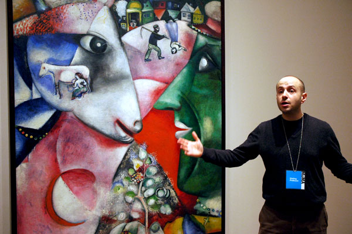
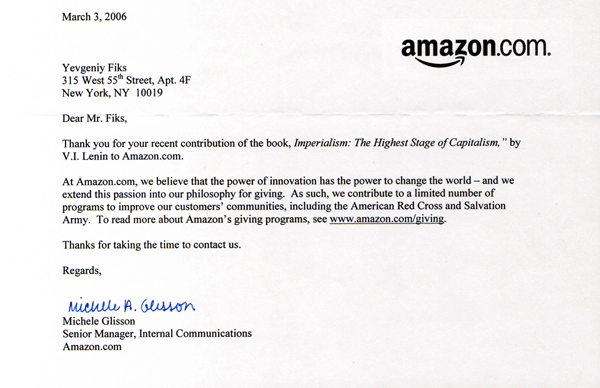
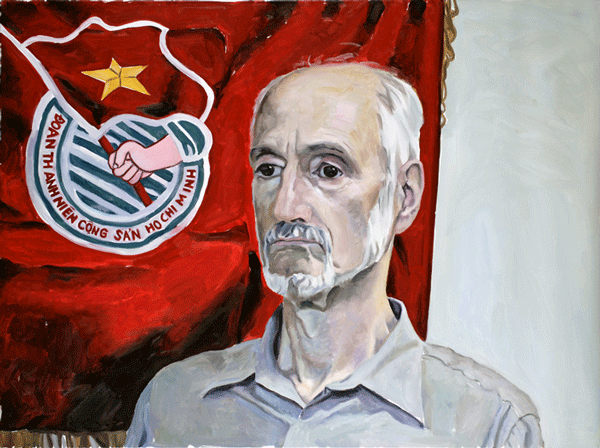

-
Post-Soviet Traumas: Interview with Yevgeniy Fiks
by Idiom March 25, 2010
Yevgeniy Fiks has drawn notice in recent years for his work exploring the post-Soviet legacy. Projects like Lenin for Your Library? and his guided Communist Tours of MOMA foreground the different contemporary responses to the memories and documents of Communist Russia. Fiks recently shared some insights into his work with Idiom.
Stephen Squibb for Idiom: Where were you born?
Yevgeniy Fiks: In Moscow, Union of Soviet Socialist Republics in 1972ID: When did you start making art?
YF: When I was six my parents took me to an open house at the Palace of Young Pioneers on Lenin Hills in Moscow. It was a fair of different afterschool art programs and each instructor was trying to promote his or her program and was doing demonstrations. According to my parents, I was mesmerized by the ceramics demonstration, refused to leave, and said that this is what I WANT to do.
ID: Can you talk a little about what is was like to grow up artistically-minded in the late soviet era? Was there a great deal of community support? Very little?
YF: It really depended on a particular situation. My parents belonged to the Soviet middle-class — technical intelligentsia it was called — so in their circles the arts were appreciated and supported. My parents definitely strongly supported me in my decision to become an artist. And although access to after school art programs was free and universal I still think that if I had been born in a working class family in the Soviet Union there was a much lesser chance of me becoming an artist. After all, the Soviet Union wasn’t a classless society. There was a privilege that came from your parents’ educational background.
ID: Can you speak a little more for an American audience about how class operated in late Soviet society? How did class pattern itself in an ostensibly classless society? To what extent was this patterning discussed? Would you say there was more or less class consciousness relative to contemporary America?
YF: I’m afraid the class system was reinstated in Russia very soon after the revolution — I would say within a few years and definitely by mid 1920s; and sources that prove this range from Emma Goldman to Ayn Rand. The appearance of a new ruling class of Party apparatchiks – with their system of goods and property distribution system closed off from the general public — had corrupted the Soviet society from the outset. Of course the official rhetoric of the Soviet State was stating all the time that we lived in a classless society but it was all a pretense and this pretense was perpetuated till the collapse of the Soviet Union. This class of apparatchiks enjoyed privileges and unearned income and the result was that the Soviet People had no sense of ownership on their society and economy.
ID: Where did artists fit on this spectrum?
YF: The art system was very rigid. It was mainly structured around the Artists’ Union, who was a middleman between the artists and the state. One was considered only truly an artist if one went through the official Soviet art schools and then joined the Artists’ Union. Only members of the Artists Union could exhibit in Museums and Galleries, all of which were of course owned by the State. So an artist who was not a member of the Artists’ Union was invisible and mute. Membership in the Artists’ Union had a complex system of privileges, including government commissions, purchase awards, exhibition opportunities, and subsidized trips abroad. “Union bosses” naturally enjoyed more privileges than common Artists’ Union members. The higher-ups in the Union had to be members of the Communist Party. It was a corrupt and suffocating system. As a teenager, though, I dreamt about joining the Artists’ Union and having a successful official career. I wanted to become a Peoples’ Artist of the USSR.
ID: Is there any parallel at all to the contemporary art system in the west?
YF: Not really. In the 1930s there were several important artists’ organizing initiatives in the US, including American Artists’ Union, American Artists’ Congress, John Reed Clubs, Artists’ Equity Association. They struggled hard for the government arts programs, unionisation, freedom of artistic expression etc. as an alternative to the art market system. But at no point, in my opinion, were these initiatives as corrupt and rigid as in the Soviet Union. Artists’ organizing in this country has always been idealistic and organic.
ID: Right. I was actually asking after a comparison between the art market system and that of the USSR – as we have heard a great deal lately about the corruption of the former in terms that seem to echo you description of the latter. If you, having knowledge of both, see no effective comparison, I think that’s important. Can you speak a little about your experience moving to this country?
YF: It’s best to describe it in terms of effect on my work. Moving here first silenced me — I had not done much art for the first ten years of living here (I came to NY in 1994). Only around 2005 I started making work. I guess it took ten years for me to process the meaning of the collapse of the Soviet bloc and only after ten years had passed that the “voice returned.” The first ten years were a time of phenomenal cultural and historical disorientation and constant unsuccessful attempts to understand the local context. But after ten years here, things had settled down and the Soviet historical memory returned in a very organic manner, and it revealed the local (US) context for me. Of course If I had not left Moscow I would not be doing what I do now.
ID: How would you characterize your relationship to the legacy of the Soviet bloc?
YF: It’s a love-hate relationship, where sentimentalism (including for the promise of the Revolution) is clashing with a sobering coming to terms with the brutal realities of the Soviet era. The legacy of the Soviet bloc is a trauma, which I’m trying to address through compulsive remembering rather than via repressing of those memories. So my relationship to the legacy of the Soviet bloc is about the disruption of historical amnesia which has affected all of us — the self-hating post-Soviets.
ID: What were you doing for the ten years in between your emigration and the resumption of your work?
YF: The first ten years were an immigrant story, with getting a degree in something that can pay the bills (computer graphics) and finding jobs. I did write for the Moscow Art Magazine during that time — articles about the NY art scene from a point of view of an outsider. I stopped writing when my post-Soviet project begun. I felt that I could no longer be an objective reporter.
ID: Can you talk more about the role of trauma in your work?
YF: Both the Soviet era and the collapse of the Soviet bloc was a trauma, but these traumas don’t manifest themselves right away. My memories of the collapse were of a celebration, a carnival. However, this celebratory feeling was only a concealment of the trauma. It started to manifest itself in my work more that 10 years after the collapse. This sense of compulsive attachment to this history and inability to move on is its manifestation I think. It’s a trauma of lost hopes of lives wasted during the Soviet experiment. It’s not about my my personal lost hopes and my life; this trauma is collective.
Some friends are making fun of me and say “how much longer will you be doing your post-Soviet project?”, “when does the post-Soviet end? Jokingly, I tell them “for 75 years.” Because the Soviet era lasted about 75 years. Now, the same time must pass in reverse. But joking aside, I think a long time will pass before the Soviet trauma is contained. And these who choose not to remember have yet to deal with it at some point in the future.
ID: Can you discuss some of your recent work in connection with these ideas?
YF: Regarding Lenin for your Library: Lenin is a “no no” of contemporary Russian discourse. After Komar and Melamid and perestroika, the name Lenin enters the post-Soviet discourse only ironically or with humorous connotations. In the post-Soviet era, Lenin is a clown, maybe a revolutionary clown. The word “Lenin” since perestroika could have only been read as a joke. So “Lenin” is another way of saying the “post-Soviet trauma.”
In the Communist Tour of MoMA project, on the one hand its impulse is the trauma that is specific to the Soviet cultural landscape – that is Socialist Realism. The repression of the historical Russian avant-garde in the 1930s and the installment deadly Socialist Realism as the official art in the USSR for sixty years. This is a trauma of the interruption of the natural development of the Modernist project by Stalin. On the other hand, it has also to do with the trauma of McCarthysm in the US and its impact on Modern Art and the Museum of Modern Art in particular. In the 1940-1950s MoMA became a target of an anti-Communist witchhunt. U.S. House of Representative member George Dondero in his speeches called Modern Art subversive and Communistic and a weapon against the West by the Communist conspiracy directed from Moscow. He called MoMA a site of communist infiltration. In order to defend itself, MoMA proclaimed that they exhibit not artists (because many artist in fact had communist ties) but their work and the artists’ politics is their personal matter, distinct from their work. So it’s also about an institutional trauma of MoMA.
ID: What projects do you have coming up?
YF: The big next project is on Alisa Zinov’evna Rosenbaum, who is better known in the US as Ayn Rand. I’m attempting to illustrate her novels using images from Stalin’s Socialist Realism. Rand’s imagery is hyper-romantic, monumental and heroic. Very similar to the Socialist Realist formula, if you think about it. The difference is of course that while in Socialist Realism, it’s the Worker who is heroic, while in Rand’s texts it’s the Industrialist. Aside from that it’s uncanny how similar the two styles are. And speaking of trauma, as a teenager Rand saw the Revolution of 1917 unfolding from her bedroom window on Nevsky Prospect in St. Petersburgh. Then her father’s pharmacy was nationalized and the hardships began. Ayn Rand’s texts are actually the result of her having been traumatized by the the Russian Revolution. It was all very personal to her. Ayn Rand was a post-Soviet; she left Russia for the States in 1926.
ID: Any long range plans?
YF: I don’t know… I wish to imagine a world after the end of the “post-Soviet,” that is after the “post-Soviet” era ends, but I don’t have such an imagination.

{kind=link}
{kind=link}
{kind=link}
1 Comment
Parallel Lives: Ayn Rand in Illustration at Winkleman
[...] image and vice versa. In his exhibition Ayn Rand in Illustrations at the Winkleman gallery, Yevgeniy Fiks‘ doesn’t quite achieve the depth we might hope for, though he and Rand’s shared [...]